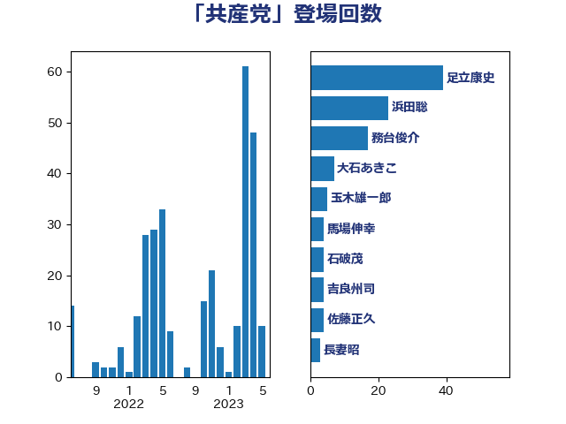

単語「共産党」

| 足立康史 | 日本維新の会 | 39 回 |
| 浜田聡 | NHK党 | 23 回 |
| 務台俊介 | 自由民主党 | 17 回 |
| 大石あきこ | れいわ新選組 | 7 回 |
| 玉木雄一郎 | 国民民主党 | 5 回 |
| 馬場伸幸 | 日本維新の会 | 4 回 |
| 石破茂 | 自由民主党 | 4 回 |
| 吉良州司 | 無所属 | 4 回 |
| 佐藤正久 | 自由民主党 | 4 回 |
| 長妻昭 | 立憲民主党 | 3 回 |
| 浦野靖人 | 日本維新の会 | 3 回 |
| 山井和則 | 立憲民主党 | 3 回 |
| 小野泰輔 | 日本維新の会 | 3 回 |
| 宮本徹 | 日本共産党 | 3 回 |
| 齋藤健 | 自由民主党 | 2 回 |
| 高橋千鶴子 | 日本共産党 | 2 回 |
| 芳賀道也 | 国民民主党 | 2 回 |
| 穀田恵二 | 日本共産党 | 2 回 |
| 田村憲久 | 自由民主党 | 2 回 |
| 源馬謙太郎 | 立憲民主党 | 2 回 |
| 東徹 | 日本維新の会 | 2 回 |
| 杉尾秀哉 | 立憲民主党 | 2 回 |
| 末松信介 | 自由民主党 | 2 回 |
| 山下貴司 | 自由民主党 | 2 回 |
| 堀場幸子 | 日本維新の会 | 2 回 |
| 前川清成 | 日本維新の会 | 2 回 |
| 井上哲士 | 日本共産党 | 2 回 |
| 青柳仁士 | 日本維新の会 | 1 回 |
| 青山繁晴 | 自由民主党 | 1 回 |
| 鈴木敦 | 国民民主党 | 1 回 |
| 金城泰邦 | 公明党 | 1 回 |
| 野田佳彦 | 立憲民主党 | 1 回 |
| 葉梨康弘 | 自由民主党 | 1 回 |
| 臼井正一 | 自由民主党 | 1 回 |
| 羽田次郎 | 立憲民主党 | 1 回 |
| 緒方林太郎 | 無所属 | 1 回 |
| 紙智子 | 日本共産党 | 1 回 |
| 空本誠喜 | 日本維新の会 | 1 回 |
| 福島伸享 | 無所属 | 1 回 |
| 神谷宗幣 | 参政党 | 1 回 |
| 田村貴昭 | 日本共産党 | 1 回 |
| 津島淳 | 自由民主党 | 1 回 |
| 泉健太 | 立憲民主党 | 1 回 |
| 沢田良 | 日本維新の会 | 1 回 |
| 永岡桂子 | 自由民主党 | 1 回 |
| 櫛渕万里 | れいわ新選組 | 1 回 |
| 榛葉賀津也 | 国民民主党 | 1 回 |
| 柴愼一 | 立憲民主党 | 1 回 |
| 柳ヶ瀬裕文 | 日本維新の会 | 1 回 |
| 林芳正 | 自由民主党 | 1 回 |
| 松木けんこう | 立憲民主党 | 1 回 |
| 松原仁 | 立憲民主党 | 1 回 |
| 新藤義孝 | 自由民主党 | 1 回 |
| 斎藤アレックス | 国民民主党 | 1 回 |
| 市村浩一郎 | 日本維新の会 | 1 回 |
| 川田龍平 | 立憲民主党 | 1 回 |
| 島尻安伊子 | 自由民主党 | 1 回 |
| 岩谷良平 | 日本維新の会 | 1 回 |
| 山谷えり子 | 自由民主党 | 1 回 |
| 山添拓 | 日本共産党 | 1 回 |
| 山口壯 | 自由民主党 | 1 回 |
| 小沼巧 | 立憲民主党 | 1 回 |
| 寺田稔 | 自由民主党 | 1 回 |
| 宮本岳志 | 日本共産党 | 1 回 |
| 大島敦 | 立憲民主党 | 1 回 |
| 國重徹 | 公明党 | 1 回 |
| 吉良よし子 | 日本共産党 | 1 回 |
| 伊波洋一 | 無所属 | 1 回 |
| 中川郁子 | 自由民主党 | 1 回 |
| 三木圭恵 | 日本維新の会 | 1 回 |
| たがや亮 | れいわ新選組 | 1 回 |